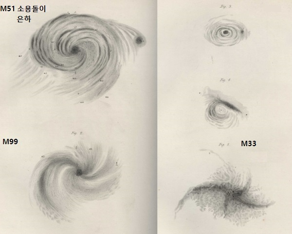
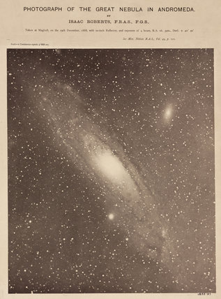

우주 이해의 역사
여러분은 우주의 크기가 얼마나 된다고 생각하는가? 아득히 멀리 보이는 별을 보며 광활한 우주를 생각할 것이다. 그런데, 우리가 보는 별들의 모임은 우주에서 보면 하나의 티끌에 지나지 않는다. 우주를 생물이라고 생각하면 우리 은하는 하나의 세포에 해당되는 정도이고, 우리가 보는 모든 별들은 우리 은하의 1억분의 1에 해당된다.
| 은하 | 우주를 구성하는 기본 단위 | 은하의 수 | 2 조개 (2016년 추정치) |
| 세포 | 생물을 구성하는 기본 단위 | 사람의 세포 수 | 20 ~ 100 조개 |
| 우리 은하의 별의 수 | 4,000~6,000억 | 우리는 맨 눈으로 몇 천개의 별만 볼 수 있다 |
지금까지 알려진 우주의 크기는 최소 1000억 광년 이상이다. 그러나 불과 100년 전까지만 해도 저명한 천문학자들조차 우주의 크기가 이렇게 크리라고 생각하지 않았다. 우리 은하가 우주의 전부이고 크기는 20~30만 광년이라고 생각했었다. 인류가 어떻게 우주에 대한 이해를 넓혀왔는지 살펴 보자.
1610년 갈릴레이의 망원경
1610년 갈릴레이는 《항성의 메시지》라는 소책자를 출간하여, 약 6개월 동안 망원경으로 관측한 달, 행성, 별자리, 성단/성운 등의 관측 기록을 남겼다. 은하수는 성운이 아니고 별이라는 것도 언급했으며, 후대의 과학자들이 은하수의 3차원적인 구조를 생각하게 만드는 시발점이 되었다.
1687년 뉴턴의 운동 법칙과 만유인력 법칙
1687년 뉴턴은《자연철학의 수학적 원리》(프린키피아)라는 책에서 태양계의 운행 원리를 완벽하게 설명하는 운동 법칙 및 만유인력 법칙을 소개한다. 이 두 법칙은 지금까지도 우주의 구조를 이해하는데 중요한 역활을 하고 있다. 예를 들면, 몇 백개의 은하로 구성된 은하단을 판단하는 기준은 이들이 서로 중력에 의해 결속되어 있는지를 보는 것이다. 또한, 바로 다음에 설명할 허셜의 하늘 모형은 하늘은 만유 인력이 작용하는 공간이므로 전체적으로는 별이 균일하게 분포할 것이라고 가정한다. 그래서, 그림에서 별을 균일하게 그려 놓았다.(아래쪽 그림 참조)
1700년대 칸트와 허셜

'철학자 칸트가 왜 여기서 나와'라고 생각하는 사람도 있을 것이다. 18세기엔 인문과 과학의 경계가 모호한 시기였고 실제로 칸트는 천문학에도 관심이 많았다. 또한, 옛부터 인간과 우주의 존재에 대한 질문은 천문학/물리학/철학/종교가 함께 고민해 온 것을 생각하면 될 것 같다. 칸트는 1755년 박사학위 논문 '일반 자연사와 천체 이론'에서 태양은 섬우주의 수 많은 별 중 하나이며 우주에는 또 다른 섬우주가 있을 것이라고 주장했다. (섬우주는 현대어로 은하를 뜻한다) 지동설은 받아 들였지만 인간이 살고 있는 태양계가 우주의 중심일 것이라는 마지막 자존심을 지키던 시대에, 관념의 틀을 뛰어 넘은 칸트의 생각이 놀랍기만 하다. 참고로, 지동설은 영어로 태양중심설(Heliocentrism)이고, 천동설은 지구중심설(Geocentrism)이다.
1784년 허셜은 '하늘의 구조에 대하여'라는 논문에서 처음으로 관측 값에 기반하여 하늘의 단면 모델을 만들었다. 아래 두 그림을 비교해 보자. 허셜의 하늘 모습은 우리가 알고 있는 은하 모습과 일부 유사함을 알 수 있다. 은하수의 암흑대를 표현하려고 노력했고, 은하수 중심 방향으로 조금이나 더 멀리 표현한 것은 의미가 있어 보인다.

|

|
개인적 생각으로 허셜의 하늘 모형은 중요한 이정표 중 하나이다. 일반 과학책에는 자세한 설명 없이 '18세기 사람들이 생각했던 우주'로 소개하며, 옛 사람들이 상상했던 우주 모형의 또 다른 버전 정도로 설명한다. 그러나, 허셜의 모형은 실제 관측에 기반한 것으로 이전의 모형과는 확연히 다른 것이다. 하늘의 단면이라는 설명만 덧붙여도 지금의 은하수 단면과 유사함을 바로 알 수 있다.
1800년대 다수의 성운에서 나선 구조 발견
(나선 성운은 현대어로 나선 은하이다)1800년대는 더 큰 망원경들이 만들어지고, 연주시차, 사진 촬영 등 다양한 관측 방법이 제시되면서 천문학의 기반을 다지는 시기이다. 윌리엄 파슨스는 1.9미터 망원경으로 안시 관측을 통하여 M51 등 다수의 성운에서 나선 구조를 발견했고, 아이작 로버츠는 가이드망원경을 이용한 장시간 사진 촬영 기법을 발명하여 M31 안드로메다 은하의 나선 모양을 분명히 알 수 있도록 하였다. 그러나, 이때까지만 해도 대다수의 사람들은 나선 성운은 태양계를 이루기 위해 성운이 회전하는 것이라고 생각했다. 나선 성운이 외부 섬우주일 수도 있다고 생각은 했지만, 이것을 뒷받침할 수 있는 관측 자료가 부족했다.
|  1845년 윌리엄 파슨스의 나선 성운 스케치 (위) |  |
| 1888년 아이작 로버츠의 안드로메다 은하 1시간 노출 사진 (우) |
1920년 우주의 크기에 대한 대논쟁
1900년대 초에 관측 기술이 발달하며 나선 모양의 성운을 단순히 우리 은하 내의 성운이라고 하기엔 설명이 안되는 많은 증거들이 쌓여간다. 급기야 1920년 나선 성운의 본질과 우주의 크기에 대해 대논쟁을 벌이게 된다. 그러나, 당시의 관측 자료는 오류도 많고 정밀하지 못했으며, 중요 사항에 대해 가정법을 사용했기에, 밤늦게까지 이어진 토론에도 불구하고 결론을 내지 못한다.
| 새플리 | 커티스 | |
| 주장 | 은하수가 전체 우주이다. 나선 성운도 은하수 내의 대상이다. 우주의 크기: 2~30만 광년 |
은하수 이외에 또 다른 섬우주가 존재한다. 은하수는 우주의 작은 부분이다. 우주의 크기: 상상할 수 없이 크다 |
| 증거 | 은하수는 매우 크다. 그런데, 성운이 은하수의 크기라고 하면 인류가 상상할 수 없는 먼 거리에 있다는 뜻이다. | 나선 성운은 다양한 각 크기를 보이며 각 크기에 따른 거리 차이는 은하수의 크기를 벗어난다. |
| 은하수의 표면 밝기가 나선 성운보다 더 어둡다. 이것은 성운이 더 가까이 있다는 뜻이다. | 안드로메다에서 발견된 신성의 밝기가 은하수에서 발견된 신성보다 어두웠다. 이것은 안드로메다가 더 멀리 있기 때문이다. | |
| M101 바람개비 성운의 회전이 관찰되었는데, 만약 성운의 크기가 2만 광년보다 크다면 회전 속도가 광속보다 크게 된다.(실제로는 회전 관찰은 오류였다.) | 나선 성운의 도플러 효과 적색 편이는 별들에 비해 매우 크다. 이것은 성운이 은하수 외부에 있다는 뜻이다. |
1920년대, 두 번의 빅뱅이 터지다
첫번째는 1925년 허블이 안드로메다 성운까지의 거리를 90만 광년으로 측정하며, 안드로메다 성운이 은하수 외부의 섬우주임을 증명한 것이다. 대논쟁의 마침표이자 우주의 크기가 수천만 배 더 커져야 한다는 충격적인 사건이었다. 이후로 수 많은 외부 은하들이 발견되었으며, 여기에 더해서 수백~수천 개의 은하가 모여 있는 은하단, 은하단의 모임인 초은하단의 존재도 밝혀진다.(1980년대) 섬우주란 용어도 은하(Galaxy)라는 용어도 대체되었으며, 이전에 나선 성운으로 불리던 많은 대상들이 은하라는 이름으로 바뀌었다.
두 번째는 말 그대로 빅뱅 이론의 시작이다. 1927년 벨기에 카톨릭 대학의 성직자이자 천문학자인 르메트르는 우주 팽창론과 함께 빅뱅 이론을 처음으로 제시하였으나, 사람들에게 널리 알려지지 않았었다. 2년 뒤 허블도 모든 은하들이 지구로부터 멀어지고 있으며 멀리 있는 은하일수록 멀어지는 속도가 더 크다는 것을 발견한다. 이것은 우주가 전체적으로 팽창하고 있다는 뜻이며 '허블-르메트르의 법칙'이라 한다.

|
| 허블-르메트르의 법칙: 우주 전체가 팽창하고 있으며 관측자를 중심으로 멀리 있는 대상은 더 빠르게 멀어져 간다. |
2020년, 관측 가능한 우주
현재는 빅뱅 이론이 정설로 받아 들여 지고 있고, 우주의 나이는 138억년으로, 관측 가능한 우주는 930억 광년으로 추정하고 있다. 관측 가능한 우주란 팽창을 고려할 때 우리가 빛을 감지할 수 있는 거리이다. 예를 들어, 현재 930억 광년 거리에 있는 대상은 망원경 성능만 좋다면 관측 가능하다는 뜻이며, 930억 광년보다 더 멀리 있는 대상은 아직 우리에게 빛이 도달하지 않은 상태이다. 1광년도, 930억 숫자도 우리에겐 너무나 너무나 큰 단위들이다. 우리에겐 너~~~무 먼 그대일 뿐이다. 그래도 이해를 돕기 위해 그림으로 표현해 본다.
Image Credit: Andrew Z. Colvin, 2018. 원본사진
.png){kind=link}
2020년, 미지의 우주
지금까지 인류는 우주에 대해 많을 것을 알아냈지만, 이 지식들 역시 티끌에 지나지 않는다. 몇 가지 키워드로 우주를 표현하면 아래 그림과 같다.
먼저, 우주의 크기는 많은 가정을 전체로 이론적으로만 계산되어 지며, 관측 가능한 우주의 10의 9543승 배라고 하며, 지금도 빛의 속도보다 빠르게 팽창한다고 한다. 말문이 막히는 숫자이다.... 그냥 무한대라고 이야기하는게 더 편할 것 같지만, 빅뱅 이론이 맞다면 우주의 한계는 분명 존재 한다.
둘째로 우주의 구성 물질은 다음과 같다.
| 보이는 물질 | 5% | 별, 행성, 성운과 같은 것으로 우리가 알고 있는 물질 |
| 암흑 물질 | 27% | 중력의 법칙에 의해 무게만 측정 되는 미지의 물질 |
| 암흑 에너지 | 68% | 우주의 가속 팽창을 설명하기 위해 존재하는 이론상의 에너지 |
암흑 물질은 빛, 전자기파 등에 반응하지 않기때문에 관측이 안된다.
그러나, 은하나 별의 궤도를 고전 역학적으로 해석하다 보면 질량이 있는 물질의 존재가 있어야 설명이 된다.
이것을 암흑물질이라 부른다.
참고로, 우리 은하는 안드로메다 은하보다 크기는 작지만, 암흑 물질을 더 많이 품고 있어 더 무겁다고 한다.
어쩌면, 지금 이순간 우리 몸 주위도 미지의 물질로 가득 차 있을 수도 있다.^^
암흑에너지는 우주의 팽창을 고전 역할적으로 해석하기 위해 이론적으로 도입한 개념이다.
뉴턴의 고전 역학 이론으로는 중력에 의해 우주의 모든 물질은 한 점으로 모여야 한다.
그런데, 반대로 우주는 팽창 속도를 점점 키우고 있다.
그래서 미지의 에너지가 팽창을 가속 시킨다고 추측하는 것이다.
셋째로 지금까지의 모든 설명은 3차원 공간을 기준으로 이루어진 것이다.
그런데, 우주가 몇 차원일지는 아무도 모른다.
어쩌면 10차원의 우주인데 우리는 3차원의 공간만 관측하다 보니 미지의 물질/에너지 개념이 필요한 것일 수도 있다.
호킹 박사를 비롯한 많은 사람들은 10차원 이상의 우주를 주장하고 있다.
예를 들어, 10차원 공간에서 3차원의 거품막인 우주가 점점 커지고 있다는 것이다.
이 경우 암흑 에너지를 도입하지 않고도 우주 팽창을 설명할 수 있다는 것이다.
인류가 우주의 크기를 넓혀가는 과정 연표
용어 설명
- 우주 (Universe): 한 마디로 모든 것이다. 존재하는 모든 물질과 에너지, 그리고 시공간 전체로 정의한다.
- 하늘 (Heaven): 허셜이 '하늘의 구조에 대하여'라는 논문에서 사용했던 단어이다. 우주(Universe)의 구조에 대하여라고 하지 않은 것으로 보아 우주에는 은하수 이외에 또 다른 섬우주가 있을지도 모른다고 생각한 허셜의 겸손함이 아닐까 싶다.
- 은하수 (Milky Way): 밤하늘을 가로지르는 눈부시도록 아름다운 은하수를 가리킨다. 1920년 대논쟁을 벌일 때에는 은하수를 '우리 은하'를 뜻하는 말로도 사용하였다.
- 섬우주 (Island Universe): 칸트가 1755년 처음 제안한 말로 현대어의 은하와 같은 말이다. 1920년대까지 많이 사용되었다.
- 은하 (Galaxy): 1925년 허블이 안드로메다 성운이 우리 은하 외부의 섬우주임을 증명한 이후, 섬우주 대신 은하라는 단어를 사용하게 된다. '우주 속의 섬우주'라는 표현이 혼동을 주었기 때문이다. Galaxy는 은하수를 의미하는 그리스어 "갈락시아스"(γαλαξίας)에서 유래했다.
- 성운 (Nebula): 밤하늘에서 구름처럼 뿌옇게 보이는 것을 지칭하는 말이다. 먼 옛날에는 은하수도 성운이라고 생각했으며, 망원경 관측 초기에는 별이 분해되지 않는 성단, 은하도 모두 성운으로 구분했다. 망원경의 성능이 좋아지면서 별이 분해되면 성단으로 다시 구분했고, 1920년대 외부 은하의 존재가 확인 된 이후 성운으로 불리던 수많은 대상을 은하로 구분하였다.
정리를 마치며
- 빅뱅 이론이 정설로 받아들여지는 과정은 과감히 생략했다. 글이 너무 길어지고, 내용이 어렵다.
- 칸트의 섬우주론을 보며 융복합 사고가 중요하다는 생각을 하게 된다. 실험/관측 결과는 제한적이어도 맘껏 상상력을 펼치며 논리적으로 정리해서 공유할 수 있는 기회가 많아지면 좋겠다.
- 허블-르메트르의 법칙에 따르면 관측 가능한 우주의 경계는 60일에 약 1광년 정도 더 멀어지는 것으로 계산된다. 광속보다 빠르다. 이것은 팽창에 의해 빠르게 멀어지는 것처럼 보이는 것이며, 물체 자체가 광속보다 빠르게 움직인다는 뜻은 아니다. 허블 상수를 326만 광년 떨어진 은하가 1초에 67.80km 속도로 멀어진다고 가정한 것이며, 나의 계산이 틀릴 수도 있다.^^
- 이 글에 나온 인물 중 M51 소용돌이 은하의 나선 모양을 눈으로 관측한 윌리엄 파슨스가 가장 부럽다.
- 지동설, 천동설을 태양중심설(Heliocentrism), 지구중심설(Geocentrism)로 바꾸면 좋겠다. 의미도 다를 뿐 아니라 과학의 역사를 좀 더 잘 이해하게 한다.
- 이글은 여러 자료를 참조하여 작성했으며 잘못된 숫자나 표현이 있을 수 있다. 언제든 알려 주기 바란다.
- 우주는 말 그대로 신비하다. 그런데, 중요한 것은 우주가 멀리 있는 별개의 관측 대상이 아니고 우리도 우주의 일부분이라는 점이다. 인간에 대해 더 잘 알게되면 우주의 신비도 더 많이 알 수 있을 것이라 믿는다. 혹시, 인류의 위대한 성인들은 우주의 실제 모습을 보거나 미지의 물질이 인간의 삶에 영향을 미치는 모습을 본 것은 아닐까? ^^
참고
- William Herschel, On the Construction of the Heavens, Philosophical Transactions of the Royal Society of London, Vol. 75. (1785), pp. 213-266.
- Parsons, William (Earl of Rosse). "Observations on the Nebulae", Philosophical Transactions of the Royal Society of London, Vol. 140, Part II, pp. 499-514, 1850.
- Cunningham, Clifford J., The Scientific Legacy of William Herschel, Springer International Publishing, 2018.
- (섬우주 그림) Harrison, E.R. Cosmology: the science of the universe Cambridge University Press, Cambridge, 2000.
- 위키피디아 및 나무위키
- 국부은하군 설명
- 허블-르메트르 법칙 참고 자료